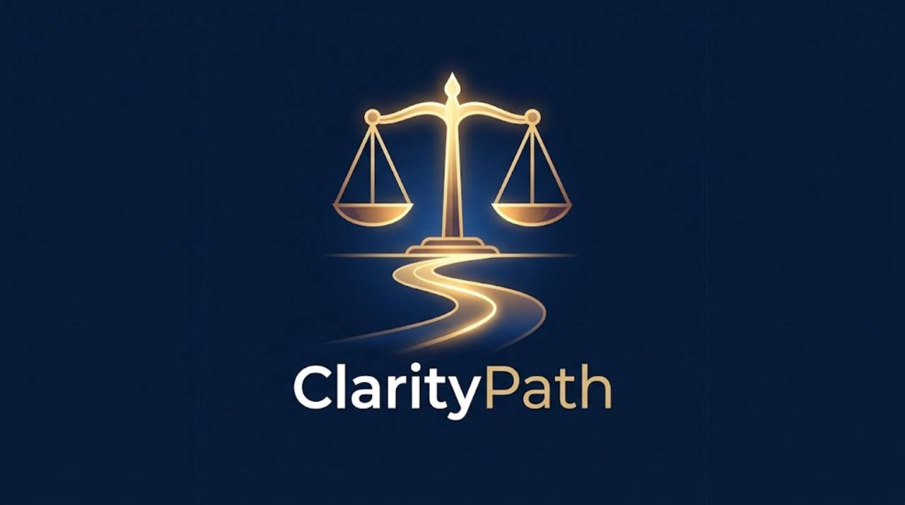

Personal intelligence · MAYHEM
Understand your situation.
Build the case you can work with.
Keep your own account, documents and discoveries together. Connect the evidence to its sources, understand what is known and unresolved, and prepare clear material for the person or institution you choose.
Psychological First Aid
If you or someone you are with is struggling, find clear first steps, verified care and community support, accessible information and independent help with mental health rights.
Open Psychological First Aid · Browse mental health situationsPractical access to your information
Understanding and organising your case should not depend on paying for professional help before you can begin. Use your own records and source-backed material to see what happened, what was required, what remains unanswered and what can be prepared next.
Solicitors Advocate Engine
MAYHEM’s Legal Reasoning and Regulatory Exposure Engine provides three ordered functions: obligation mapping, exposure assessment and submission framing. The workspace records the cited duty, compares it with verified outcomes, and prepares a draft for the specified recipient, jurisdiction and purpose.
Original evidence, interpretation and advocacy stay separate. Firsthand accounts do not require an extra document to be recorded as evidence. The engine’s defined inputs and authority requirements remain visible.
Your records stay under your control
Keep an encrypted device copy or connect a separate private GitHub repository you own. The public repository contains application code. Private saving requires your repository connection; nothing is uploaded merely by opening the site.
Structured summaries work without an AI API. AI narrative assistance and live research use your configured service after you review the exact selected payload. No provider key is embedded in the public site.
Sources you can inspect
Private MAYHEM build specifications are not part of the public source library. The source library identifies what text is actually included and which entries are external links only. Add the provisions, decisions, official guidance and discoveries relevant to your case, with their actual passages, versions and links.
The application does not pretend that every law relevant to an unknown case has already been loaded. An absent passage is shown as a gap.
Prepare the handoff you choose
Select records and source material, review the summary and download a protected handoff with selected originals and a verification manifest. An explicitly chosen readable ZIP is also available. Creating that file does not contact a solicitor, lodge a complaint or share repository access.
Start with my situation · Open a protected handoffBuild and replication
The separate Build page contains the public ClarityPath application guide, client and service source, operating guide, tests and implementation status. Private MAYHEM specifications are excluded. Copy or download one complete pack to reproduce the site under another owner’s account.
Open Build · Read implementation and test status